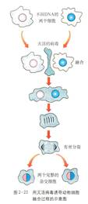
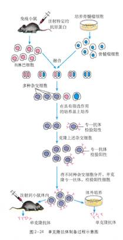

2.4动物细胞融合与单克隆抗体
我们知道,运用植物体细胞杂交技术，可以跨越植物种属间生殖隔离的屏障，培育出新的作物类型。那么，能不能采用类似的方法，让不同种动物的体细胞进行杂交呢？科学家经过长期的探索，终于实现了这样的设想。
动物细胞融合
动物细胞融合(cell fusion)也称细胞杂交(cell hybridization)，是指两个或多个动物细胞结合形成一个细胞的过程，融合后形成的具有原来两个或多个细胞遗传信息的单核细胞，称为杂交细胞(hybrid cell）。
动物细胞融合与植物原生质体融合的基本原理相同，诱导动物细胞融合的方法与植物原生质体融合的方法也类似，常用的诱导因素有聚乙二醇(PEG)、灭活的病毒(图2一23）、电激等。

动物细胞融合技术的发展简史
20世纪30年代，科学家们相继在肺结核、天花、水痘、麻疹等疾病患者的病理组织中观察到多核细胞。20世纪70年代，科学家们在蛙的血细胞中也看到了多核细胞的现象，但是受当时科技发展水平的限制、人们对这一现象并没有给予足够重视。1962年，日本科学家发现日本血凝性病毒能引起艾氏腹水瘤细胞融合成多核细胞的现象。1965年，英国科学家进一步证实了灭活的病毒在适当条件下也可以诱发动物细胞融合。后来，科学家又成功诱导了不同种动物的体细胞融合，并且能将杂种细胞培养成活。细胞融合技术不断改进，现在已经广泛应用于细胞学、遗传学、免疫学、病毒学等多种学科的研究工作中。
细胞融合技术突破了有性杂交方法的局限，使远缘杂交成为可能。至今种间、属间、科间，甚至动物和植物之间的细胞融合都已获得了成功。目前，这一技术已经成为研究细胞遗传、细胞免疫、肿瘤和生物新品种培育等的重要手段。特别是利用细胞融合技术而发展起来的杂交瘤(hybridoma)技术，为制造单克隆抗体开辟了新途径。
生物技术资料卡：
灭活病毒诱导细胞融合的原理是病毒表面含有的糖蛋白和一些酶能够与细胞膜上的糖蛋白发生作用使细胞互相凝聚，细胞膜上的蛋白质分子和脂质分子重新排布，细胞膜打开，细胞发生融合。灭活是指用物理或化学手段使病毒或细菌失去感染能力，但是并不破坏这些病原体的抗原结构。
单克隆抗体
长期以来，人们为了获得抗体，采用的方法是向动物体内反复注射某种抗原，使动物产生抗体，然后，从动物血清中分离所需抗体。这种方法不仅产量低、纯度低，而且制备的抗体特异性差。为了解决这一难题，科学家们进行了多年的研究和探索。他们发现，哺乳动物感染病原体(如病毒、细菌等)后，体内会形成相应的B淋巴细胞。B淋巴细胞能分泌抗体，凝聚或杀死这些病原体。动物在免疫反应的过程中，体内产生的特异性抗体种类可多达百万种以上，但是每一个B淋巴细胞只分泌一种特异性抗体。因此，要想获得大量的单一抗体，必须克隆单一的B淋巴细胞，形成细胞群。遗憾的是，在体外培养条件下，一个B淋巴细胞是不可能无限增殖的，怎样解决这一问题呢？
单克隆抗体的制备
1975年，英国科学家米尔斯坦(C.Milstein)和德国科学家科勒（G. Kohler)在前人工作的基础上，继续探索和尝试，并且充分发挥想像力，设计了一个极富创造性的实验方案(图2—24)。他们想到，如果把一种B淋巴细胞与能在体外大量增殖的骨髓瘤细胞进行融合，所得到的融合细胞就能大量增殖，产生足够数量的特定抗体。根据这一设想，他们用羊的红细胞对小鼠进行注射，使小鼠产生免疫反应，从产生免疫反应小鼠的脾脏细胞中，他们得到了抗羊红细胞的抗体，这说明在小鼠的脾细胞中形成了相应的B淋巴细胞。他们又设法将鼠的骨髓瘤细胞与脾细胞中产生的B淋巴细胞融合，再用特定的选择性培养基进行筛选。在该培养基上，未融合的亲本细胞和融合的具有同种核的细胞都会死亡，只有融合的杂种细胞才能生长。这种杂种细胞的特点是既能迅速大量繁殖，又能产生专一的抗体。对上述经选择性培养的杂交瘤细胞，还需进行克隆化培养和抗体检测，经多次筛选，就可获得足够数量的能分泌所需抗体的细胞。最后，将杂交瘤细胞在体外条件下做大规模培养，或注射到小鼠腹腔内增殖，这样，从细胞培养液或小鼠腹水中，就可以提取出大量的单克隆抗体了。

由于米尔斯坦和科勒等人的杰出贡献，1984年，他们获得了诺贝尔生理学或医学奖。
单克隆抗体的应用
单克隆杭体最主要的优点在于它的特异性强、灵敏度高，并可能大量制备。单克隆杭体技术在生物工程中占有重要的地位，至今，全球已经报道的单克隆抗体达10万多种，用于诊断和治疗用的单克隆抗体约有500余种。单克隆抗体主要有以下几方面的用途。
作为诊断试剂单克隆抗体最广泛的用途是用作体外诊断试剂，它在多种人类疾病及动植物病害的诊断和病原鉴定中发挥着重要的作用。由于单克隆抗体纯度高、特异性强，所以能准确地识别各种抗原物质的细微差异，并跟一定抗原发生特异性结合，因此，单克隆杭体在诊断的应用上，具有准确、高效、简易、快速的优点。
利用同位索标记的单克隆杭体，在特定的组织中成像的枝术，可定位诊断肿瘤、心血管畸形等疾病。
用于治疗疾病和运载药物 从目前临床试验来看，单克隆抗体主要用于癌症治疗，也有少量用干其他疾病的治疗。单抗药物剂型种类繁多，有单独使用的，也有与同位素、毒素、药物结合使用的。如果把抗癌细胞的单克隆抗体跟放射性同位素、化学药物或细胞毒素相结合，制成“生物导弹”，注入体内，借助单克隆抗体的导向作用，能将药物定向带到癌细胞所在位置，在原位杀死癌细胞。这样既不损伤正常细胞，又减少了用药剂量。因此，作为一种疗效高、毒副作用小的新型药物—“生物导弹”将有广阔的应用前景。
小知识
用抗人绒毛膜促性腺激素单克隆抗体做成的“早早孕诊断试剂盒”，灵敏度很高，在妊娠的第８天就可以做出诊断，比原来的诊断方法提前了１０天左右，可以避免孕妇在不知道妊娠的情况下因服用药物而对胎儿造成不利影响。该方法检测的准确率在９０％以上。